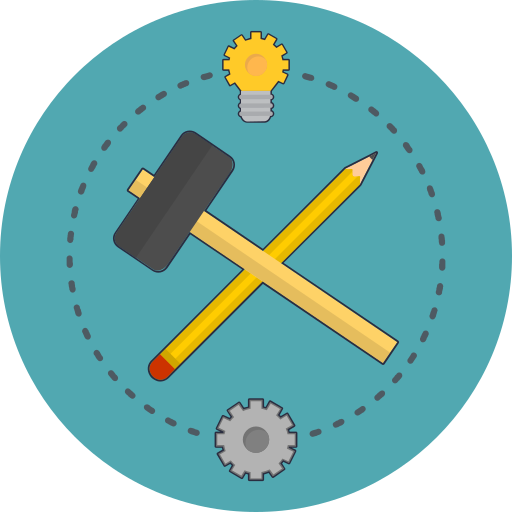

AXA WebEngine Framework
A Test Automation Framework (TAF) is a set of guidelines, libraries for creating and designing test cases. It is conceptual part of the automated testing, provides common functionalities and best practices that helps Test Automation Engineers to create reliable, maintainable, and well-structured Test Automation Solutions (TAS).
AXA WebEngine Framework makes it easier to build highly effective test automation solutions for Web, Mobile Web and Mobile App testing.
Built by Test Guild of AXA France, available in .NET and JAVA and used in dozens of test automation projects within AXA France. We decided to open source this framework to share our knowledge on Test Automation to the community and hopes we can improve the framework (and the quality of IT Systems, or course 😉) together.
Why WebEngine Framework?
WebEngine Framework resolves some common problems every test automation project can face, and it simplifies the writing of test scripts.
- It supports all Selenium based technologies on Desktop Browsers, Mobile Browsers on different Mobile Devices.
- Using Browser Factory, there is no need to download various selenium WebDriver when browser and its version changes.
- Description oriented Web Element identification and synchronization with browser out-of-box.
- Organizing Web Element in Page Model makes test scripts easy to read and to maintain.
- Fully object-oriented and compatible with Keyword-Driven and Data-driven approach.
- Compatible with other another Unit test frameworks such as NUnit, Cucumber
- Easy configuration and Set-up for Execution: Run test directly from Excel, as well as on DevOps platforms
- Graphical test report.
- Open Source, free usage and let’s improve it together!
Getting started.
- Introduction: Explains common concepts of the framework.
- API Reference: Explains every class, method and property.
- Tutorials: Follow some step by step turotial to build first test automation solution using different approach.
 |
 |
 | |
|---|---|---|---|
| Introduction | .NET API Reference |
JAVA API Reference |
Tutorials & Examples |
Use the latest version
The Framework is distributed via Package Management: NuGet for .NET version and Maven for JAVA Version.
Contact us
Feel free to reach us if you want to adopt the Framework, report Bugs, or have good ideas to contribute on it.
Repository of .NET Project and shared components:
- https://github.com/AxaGuilDEv/
- Main contributor: Huaxing YUAN


Repository Java Project:
- https://github.com/AxaGuilDEv/
- Main contributor: Joseph ARUL